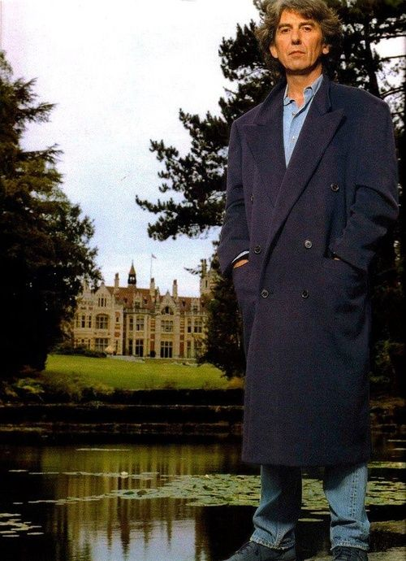

1956 - He heard Elvis for the 1st time, loves the music. After this, his father bought him an acoustic guitar.
1956 - George became friends with a kid from his school, Paul McCartney.
1957 - George's friend McCartney joined a band called the Quarrymen wich had been founded by John Lennon.
1958 - George joined the Quarrymen as lead guitarrist.
1959 - George left school and found work as an electrician in a local department store.
1960 - The 'Quarrymen' changed their band name several times until they finally decided it would be The Beatles.
1962 - Richard Starkey (Ringo Starr) replaced Pete Best as drummer of the group.
1963 - The album 'Please Please Me' was released in the UK. It reached No 1 in the album charts.
1963 - The Beatles performed in front of Queen Elizabeth II, Princess Margaret and Lord Snowdon at the Royal Command Performance.
1965 - John, Paul McCartney, Ringo Starr and George Harrison were awarded the MBE.
1966 - George began to experiment with instruments from other cultures especially the sitar and the tambura.
1966 - George married model Pattie Boyd. Paul McCartney was best man.
1968 - George released his first solo album 'Wonderwall Music' the soundtrack to the film Wonderwall. Still this same year 'While my guitar gently weeps' was recorded.
1969 - The Beatles began recording the album Abbey Road. The album featured 2 songs by George 'Here Comes the Sun' and 'Something'.
1969 - George released the album 'Electronic Sound'.
1970 - Paul McCartney announced that the Beatles had split. Still this year George released the album 'All things must pass' which reached number 1 in the UK and US charts.
1973 - The album 'Living in the Material World' was released by George. It reached number 1 in the US and number 2 in the UK.
1974 - Pattie left George. Still in this year he mets Olivia.
1974 - George founded Dark Horse Records. He also released the album 'Dark Horse' in that year.
1975 - George released the album 'Extra Texture'.
1976 - The album 'Thirty-Three & 1/3' was released on George's own record label, Dark Horse.
1977 - George and Pattie were divorced.
1978 - George's father died. A son, Dhani, was born to George and Olivia. They marry.
1979 - George released the album 'George Harrison'.
1981 - George released the single 'All Those Years Ago' as a tribute to John Lennon. Still that year the album 'Somewhere in England' was released.
1982 - George Harrison released the album 'Gone Troppo'.
1987 - The album 'Cloud Nine' was released.
1988 - George Harrison formed the group 'The Traveling Wilburys' with Bob Dylan, Jeff Lynne, Roy Orbison and Tom Petty. They used pseudonyms.
1988 - Their first album 'The Travelling Wilburys Vol 1' was released.
1990 - 'The Traveling Wilburys Vol 3' was released. George deliberately chose the title to confuse the public.
1994 - George began working with Paul McCartney on an anthology of Beatles Albums.
1997 - George became ill and was diagnosed with cancer of the throat.
1999 - George Harrison was stabbed around 40 times by a paranoid man who broke into his home. George was hospitalised for treatment.
2001 - George, Paul and Ringo met for the last time.
2001 - George Harrison died in Los Angeles. His ashes were scattered at Varanasi, India.
2002 - The album 'Brainwashed' was released posthumously. It was finished by George's son, Dhani and Jeff Lynne.
If you want to know more about the life oh this great person, you can read on the Wikipedia.
“If you don't know where you're going, any road'll take you there” ― George Harrison
GALLERY

“With every mistake, we must surely be learning.” ― George Harrison